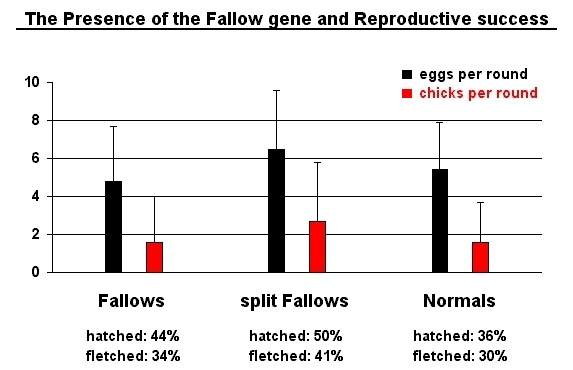

|
This book is addressing some interesting points that may be relevant to the breeding of Fallow budgerigars and to the breeding of other recessive budgerigar varieties. This hugbook is not for free. However, the costs are very limited: Give someone a hug and the book will be found below.
by the publisher
The Fallows are beautiful birds if you
like pastel colors and birds with red eyes and silky feathers.
The intention of the publisher has been to produce a practical textbook based on theoretical experience. The statements are the view of the virtual experts and sometimes reflect opinions found at the extreme corners of the fancy. I hope that some of the information gathered together by the experts will be highly disputed. However, please remember that naked kings are very rare and if not all of your questions have been answered you may at least realize that you are still confused but confused on a higher level. Budgie people are known to have a peculiar humor I heard. Bonsai
by the publisher
Fallow budgerigars have been regularly bred since 1930. It is published that at least three different mutations with a very similar phenotype/appearance exist. Fallows can be bred in the Green as well as in the Blue and Yellowface series of colors and in combination with most of the mutations. The wing color of Fallows is described as pale brownish grey and the body color is gradually diluted (to White or Yellow) with the original color best visible between the wings on the back of the birds (see picture). This beautiful COLOR GRADIENT is typical for all Fallows. The cere is pink colored in cocks and brown in hens. Throat spots are brownish and legs and feet are pink. The eyes are red. The English (and the Scottish) Fallows do not show such a perfectly white iris ring as do the German and the Australian Fallows. The color of the iris ring appears to be the only visual difference between these mutations. In Fallows the black pigment is not altered to brown pigment. The visual effect is apparently due to reduced enzyme activity (German Fallows) and due to defects in melanocyte morphology (English Fallows).
A new page in the history of Fallows has been written recently. In 2003 a male budgerigar with red eyes was found in a pet shop by Kanji Kawabata. He bred with this bird -it was a Goldenface-Bergman-Blue Clearwing Opaline Fallow- and made public the Japanese Fallow. Based on his observations the Japanese Fallow mutation is autosomal recessive and has white iris rings, exactly like the German and Australian Fallows. He combined the Japanese Fallow mutation with the Clearwing, Danish Pied, Opaline, Violet, Cinnamon, Japanese Crest ("helicopter") and the Goldenfaces. The resulting birds are unique.
Breeding experiments have shown that the English, Scottish and German Fallow mutations are not allelic. In other words mating of two Fallows from different mutations will result in offspring that look perfectly normal. These chicks are split for both Fallow mutations. The Fallow mutations are recessive and therefore only visible if two copies of the Fallow gene are present. Today it is not known whether one of the Fallow mutations is linked to a commonly accepted mutation or not (Dominant Grey and Australian Fallow? Spangle and English Fallow?). It is not known whether the Australian, Japanese and German Fallow mutations are allelic. It may be anticipated that a Fallow mutation is allelic to the Non-sexlinked Recessive Inos.
The name of the Fallow mutation was adapted from the German word “Falben”. The corresponding adjective “falb” describes the yellow-brownish color of horses`hair (Falbe or Falber), cats`hair (Falbkatze) or budgies`hair (Falbe Wellensittiche). Currently, it is believed that the word “fallow” is (exclusively) used to describe uncultivated land that is allowed to idle during the growing season. A classical memory problem. However, it is a nonsense to apply this particular meaning to the pigment of budgerigars because “fallow" is also an adjective in English describing a light yellowish brown color (Meriam Webster) e.g. Fallow Deer. The adjective “fallow” is derived from Old English “fealu” that is akin to Old High German falo; “falb” is derived from this Old High German falo. In other words the translation of the word “Falben” to “Fallow” was very intelligent and not as queer as people suggest today. "Fallow" in our context does not mean untilled and undeveloped but is describing the color of the birds. Please adjust future publications on Fallow budgerigars accordingly. Breeding of exhibition quality Fallows is a task for stubborn people with a thick skin. This may be the reason why some of the comments from the virtual experts appear to be very spicy. Bonsai
SM: My birdroom is 60ft by 20ft (18m x
6m). It is a brick construction with two internal flights. The 48 breeding
cages measure each 24in x 18in x 15in (64cm x 45cm x 37cm) and the corresponding
outside nestboxes are 6in x 6in x 10in (15cm x 15cm x 25cm).
FM: We have two birdrooms. One birdroom
with 8 breeding cages each 30in x 18in x 16in (75cm x 45cm x 40cm) and
an internal flight measuring 8ft x 5ft x 7ft (2.4m x 1.5m x 2.2m). Nestboxes
are 10in x 6in x 10in (25cm x 15cm x 25cm). I am a great believer in true
light fluorescent lamps that provide a spectrum similar to natural light
including the required UV light. The day length is adjusted to stimulate
natural cycles. To optimize the breeding of birds you have to understand
the role of circadian rhythms and photoperiods too. The timing of the artificial
light is as important as the quality of the light. In general I suggest
that the photoperiod is gradually increased from 9 to 10 hours to 15 to
16 hours a day within 6 to 8 weeks. Less than 9 hours of light per day
appeared to abolish breeding condition. The second birdroom is an external
flight with a connected small inside flight to guarantee shelter during
the night from e.g. cats. Birds always move into the inside flight over
night. During wintertime all birds are kept inside. It is feasible to condition
budgerigars in a way that the first chicks are hatched precisely on the
ring issue date if required, starting for example conditioning in September.
If lighting is kept constant over several years birds will breed very well
the first year but fail to breed in the second year. This observation I
made at the very beginning in the fancy and I of course blamed the birds
or the former owner of the birds. Depending on the distance of the breeding
cage from the artificial light source you can even direct the sex ratio
in the clutches (!). Move the cage closer to the source and you will have
more cocks.
SM: Organization is essential in my birdroom. Normally I check nestboxes twice everyday. However when eggs are due to hatch I check more often to make sure that hatched chicks are being fed properly. A record card is attached to each breeding cage and notes are made about fertile, addled or damaged eggs. My feeding routine takes about 3 hours a day. Water is changed every day and cleaning is done every week, mostly at weekends. FM: In the inside birdroom the light is turned on every morning and turned off every evening by a timer. The exact time depends on the condition of the birds and on the season. Our birds are fed every day and sufficient water is provided too but we do not stick to a defined routine. Our birds know that they will receive a delicious piece of greenfood when we enter the birdroom, but they do not know whether this will be at 6.00 a.m. or at 6.00 p.m. Nestboxes with chicks or with eggs due to hatch are inspected twice a week and records are updated accordingly. In our notebook we record the age of the breeding birds, the size of the clutches, the number of chicks hatched, the number of chicks fledged and the amount of rounds performed. We have individual files for all birds specifying all the details of the birds and the number and quality of the offspring. We do not mark eggs and we aim to cause as little disturbance as possible. Most of the time in the birdroom we simply sit there and observe. We spend a lot of time with particularly sympathetic youngsters. The “lazy breeder” method, also called “deep litter” method, is preferred. We do not think that a weekly disinfection is appropriate.
SM: I use a basic seed mixture that is composed of millet (Japanese, White, Yellow, Panicum), plain canary and grouts. Grit, cuttlefish and mineral blocks are always available. Hardboiled eggs are mixed with breadcrumbs and used as softfood every day during the year. The water is filtered and vitamin supplements are added throughout the year. Entrodex (probiotic) is added to the softfood. FM: We feed a commercial basic seed mixture of canary seed and different millets. If possible the birds get greenfood everyday. Our tap water is of very good quality and not chemically treated. Carrots or apples are distributed in the flights regularly. Mineral blocks and softfood are available for breeding pairs only. A commercial softfood is given to birds with chicks starting 2 to 4 days before chicks are due to hatch and removed after the chicks are fledged. We do not add vitamins to the food and the concept of stimulating a bird’s (or a human’s) natural intestinal flora is of course a marketing gag and nothing else (if your birds are not treated with antibiotics every month). It was shown that a raw protein content of 10% in the seed is sufficient for nonbreeding birds [see reference 1]. Also it is not necessary to supplement the food with the most critical amino acid lysine. We believe that the situation is different in breeding birds rearing a dozen chicks and we provide enough softfood with lecithin.
SM: Today’s showbirds are of such high quality that they are reacting more sensitively to invading pathogens as compared to wild budgerigars. I use Ramizol for treating trichomoniasis, Nystatin to control fungal infections, Virkon S to kill viruses, Chloromycetin to treat eye infections, Ivermectin to fight scaly mite and Mega-S to fight megabacteria. Amoxycillin and Cephalexin are used to irradiate bacteria. FM: We do not treat
sick birds with antibiotics or other medicine. We believe that the elimination
rather than the cure of sick birds is a must if you plan to breed with
your birds. Selection of healthy birds is the superlative medicine chest.
It is clear from experiments with mice that a successful response to a
pathogen (virus, fungus, bacterium, yeast) in a stud is directly related
to the diversity of certain molecules found on key cells of the immune
system. These molecules are required to initiate an appropriate immune
response and appear to prevent inbreeding by directing the mate choice
as proven in mice and also in humans (see reference 6) to prevent
matings between genetically similar individuals. Reproductive mechanisms
are varied and range from selective fertilization to selective abortion.
In inbred studs the diversity of these molecules is decreased. It is therefore
not uncommon that a high percentage of the birds in an inbred stud can
not fight e.g. a particular strain of bacteria and will eventually die
if not treated with high doses of antibiotics. Wide (and wild) application
of antibiotics is directly responsible for the development of resistances
in bacteria and fungi. The problems of Megabacteria (a yeast) are maybe
due to a superinfection in the gut by bacteria (they open the gate) followed
by the multiplication of normally inoffensive Megabacteria. Similar yeast
infections are observed in immunocompromised human patients or not yet
immunocompetent children. It is therefore not surprising that newly hatched
chicks are very vulnerable and it is heartbreaking to hear that plenty
of budgie breeders observe high juvenile mortality these days without apparent
cause. The only scientifically (not psychologically) sound advice is to
start from scratch with budgerigars that are selected for health. Maybe
one should not buy budgerigars from breeders with a big medicine chest
and a known history of Megabacteriosis. Megabacteria can be eliminated
from the gut of your birds for a short period of time but they can never
be irradicated from the environment of your budgerigars if you do not keep
birds under quasi sterile conditions. Humans, especially children need
fresh air and sunshine to be healthy and happy. It is not heresy
to claim similar conditions for birds, especially breeding birds.
SM: I keep between 300 and 400 budgerigars and of these 2 to 5 are German Fallows. Most of the rest are Spangles, Cinnamons and Opalines in Greygreen, Green, Grey, blue and Green. I also keep a number of Yellowfaces, Lutinos and Dominant Pieds. This is probably too many, but I do believe that it is necessary to breed several hundred chicks each year to give yourself a chance to breed some outstanding chicks. I keep more hens than cocks due to the problems that are often related to hens. I do not consider myself as a Fallow specialist as I keep maximally half a dozen at any given time but do you know somebody that keeps more Fallows? FM: We keep between 100 and 200 birds and
of these 20 to 50 are Fallows or split Fallows. We aim to breed from 16
pairs every year three full rounds per pair. Our policy is to keep all
birds from a pairing or not a single one. The brothers and sisters as well
as the parents of a particular bird we would like to breed with are held
back for at least one year. Some families are kept for years. We intend
to observe each family as a whole to check for vitality, character, intelligence
and longevity. It may occur that we keep more than 15 brothers and sisters
from a distinctive bird that will never see a breeding cage from the inside.
It may also happen that after a regular evaluation of a defined family,
4 sisters from one pair are used for breeding. We endeavor to have as many
chicks from a pair as possible and we do not pair a cock to several hens
in one season. Selection can only be applied seriously
if you have a picture of the real potential of a given mating. This potential
is reflected by the quality distribution of the youngsters.
SM: I select based on visual qualities and pedigree. The visual quality accounts for 80% and the pedigree for 20%. The birds I keep have to be big birds with a lot of feather. Big heads with directional feathering and a lot of backskull is a must as well as big shoulders to carry the massive heads. I like to see a deep mask with evenly distributed spots and a tucked in beak. I also breed with the lesser brothers and sisters of the top birds from other breeders that I can buy. Selection in the aviary of a seller is as important as selection in my own aviary. FM: Selection of the breeding birds is absolutely vital and mandatory for your stud. Our selection method is very simple. We breed with the best birds from the best families. The characteristics we are looking for are balance, balance and balance. The birds have to be good flyers with a lot of temperament and they have to come from fertile families on both sides of the pedigree. Our definition of fertility is simple. We require a pair of birds to rear at least a total of 9 chicks in three subsequent rounds before the offspring is considered for a breeding program. The mean clutch size has to be greater than six eggs. These are the prerequisites before we start to think about the standard of excellence. Of course we do not breed with featherless birds that have three legs or more than two heads. However in some odd cases we breed with peculiar birds simply because we like them without considering the above mentioned rules. The budgerigars we buy are normally in this category. We also realized that we have the tendency to breed with offspring from birds that have been bought. Our excuse is very lucid. We believe that these birds are very special and belong to the category of ravishing birds that are simply exquisite and therefore valuable. This is a perfect mirror of human nature and we are not willing to fight it even though we should anticipate breeding problems in the future.
SM: My aim is to breed quality in quantity therefore I am a great disciple of related pairings if the original birds are of real quality. Aunt to nephew, uncle to niece or cousin to cousin are preferred matings. I do not pair birds with similar faults such as flecked birds, birds with hinged tails or small masks. The starting point for developing a winning line or family in my hands is always a good cock that is fertile and prepotent. This cock will be mated to 4 or 5 related hens in the first season to produce halfsiblings for the next year. Mating of these halfsiblings together provides me with the nucleus of a winning line. Occasionally these birds can be mated back to the original cock to fix established characteristics. FM: We are great
believers in assortative matings or mating of phenotypically similar
birds. It is more likely that these birds carry the same or similar alleles
for the desired morphology. However the more you try to cover the deficiencies
in one bird with good qualities in another, the less the birds will have
in common. If results are not satisfactory you should not blame assortative
mating as that is no longer what you are doing. Peer reviewed data on inbreeding
in budgerigars are very rare and results are controversial as the observed
heterogeneity in response to inbreeding, resulting in increased or decreased
reproductive success, may be attributed to environmental differences or
to the history of individual strains [see reference 3]. So far we have
not had the opportunity to start a defined inbreeding program as the backgrounds
of the individual birds in question are not fully known or not satisfactory.
Inbreeding with birds of unknown origin is a high risk and a short term
project only, as it is known from experiments in mice that at least 95%
of all lines started will disappear within 8 to 10 generations.
What features have to be refined in your Fallows? SM: The size, the head and the feather texture. FM: The features they don’t have: Size, head and eventually balance.
What is your method for breeding marvelous Fallows? SM: I have a large number of good budgerigars in all the mainstream colors. The Fallow gene is recessive to normal, therefore I use the standard method for improving recessives. I pair the best visual Fallows with the best outcross available. The best split young Fallow can then be paired either with split Fallows or with Fallows from the top of the stud. It is a long way to go. To improve budgerigars in general I use Darkgreens for the color, Greygreens for the size, Opalines for the spots and Spangles for the fertility. Flecked birds carry the feather I want and to dilute the flecking I use Cinnamon that weakens the color and is beneficial in removing flecking. Unfortunately the Fallow gene is very weak and it is difficult to keep it balanced. FM: The best way is to obtain Fallows from
an exhibition stud, Fallows that have been bred by accident without previous
knowledge of the genetic makeup of the parents.
We concluded from these observations that
most of the traits that define the size (and probably also other exhibition
features) are not dominant at all.
The AIDA strategy:
With this method the progress will be slow
within the first years but sensational afterwards. You will need a lot
of visual Fallows for control pairings but do not be tempted to pair the
split Fallows together before you are happy with the visual quality of
your splits. Do not expect progress by pairing Fallows to split Fallows.
The most valuable birds for your breeding program are the birds that are
split for Fallow.
Are cocks or hens more important in your Fallow breeding program? SM: The quality of the cocks is the most important part in a pairing. Good cocks can transmit their features to cocks and hens as well. Good cocks can be mated for several years with several hens each year resulting in many half-sisters and half-brothers that will be the basis for building a winning line or even a winning stud. I prefer to buy good cocks as outcrosses and I aim to breed typey hens myself. My preference for good cocks, if possible buff cocks with broad shoulders, holds true for all budgerigar varieties including Fallows. FM: If we are biased then we are not only slightly biased in favor of the hens. Good hens or even better a handful of good sisters of real quality are the motor for a successful breeding program. We started to breed Fallows with two single birds only. The offspring of the cock were used to breed more Fallows for experimental and control pairings. In these cases we bred with cocks and hens. The offspring of the hen were used differently. To upgrade the Fallows with the above mentioned AIDA strategy we only used hens from this mating. There are plenty of reasons for this. The foundation hen did not stop laying eggs before the first chick was hatched. We wanted to keep and propagate this exceptional peculiarity in our stud. The only way to assess the inheritance of this feature is by using female offspring. Unfortunately this trait was never ever found in the offspring. The minimal number of chicks fledged per clutch was 6. We knew that the cock that was mated to the Fallow hen was very fertile, because he was testmated before, but we also hoped that this hen could store semen for a prolonged time as is claimed in the literature (?). Furthermore, it is known that specific genetic information is only carried by the hen. A part of this information is only found on the Y chromosome of the female bird. In addition very important information that is necessary for the generation of metabolic energy in the mitochondria of every cell, is passed to the offspring via the hen only. Mitochondria are very small organelles that represent the power plants of cells and we speculate that they are partially accountable for the temperament of the birds too. The information for the functioning of these power plants is also carried in the motile germ cells of the males but is lost during the fertilization of the egg. Last but not least we intended to breed preferentially Opaline Fallows. Only a part of the hens carried the Opaline factor. In fact we started the upgrading of our Fallows with 5 Opaline hens that were split Fallow. All these hens were daughters of our foundation hen.
How do you improve feathers in your Fallows? SM: Feathering, especially directional feathering, is difficult to improve. I divide my budgerigars into three standard categories: yellow, intermediate and buff and I aim to have in all pairings a buff partner with coarse feathers. My preferred picks are normally buff cocks as buff hens tend to be poor breeders. Following these principles my Fallows are paired to buff partners in most cases and consequently feathers have been improved over the years. FM: In our opinion the yellow-intermediate-buff
theory is a very attractive concept that was adopted too quickly in the
fancy. The broad phenotypical classification of feathers into these three
categories is an oversimplification and in the final consequence meaningless.
To add to the confusion many fanciers realized this and added even more
categories such as medium buff and super buff. Feathers are very complex
structures and length, shape, width, thickness, down, structure of barbs
and shafts all contribute to the final appearance of the bird. The inheritance
of feather structures is in our eyes the least understood aspect of breeding
show budgerigars. Beside this the bone structure, the skeletal dimensions
and the muscularity are so important for the first and the lasting impression.
Of course the length of feathers is a prerequisite to have a deep mask,
and width is important in order to have good spots, but we are not part
of those feather specialists who can talk about feathers and the heredity
of feathers for hours. Feather analysis is not important in our breeding
program. Our Fallows have feathers and that’s it.
What is your opinion about feather dusters? SM: I have had enough feather dusters to know that there is a potential for quality in my lines. Breeding of feather dusters is a sign that you are achieving the maximum level of quality for your budgerigars. If that level is still not what you want then you have to introduce outcrosses to your stock that should bring you to the next level. So far my Fallows are not good enough to produce feather dusters. FM: The production of feather duster monsters is detrimental to all breeding efforts. We believe that the occurrence of these nonviable mooncalfs is a sign that your lines have been bred into a dead end. When you go on to breed with the parents or the siblings of these feather dusters then you have achieved the maximal level of incompetence and you have probably lost all common sense.
How do you go about judging Fallow budgerigars? SM: There are basic principles independent of which variety is being exhibited and judged. A good budgerigar has to be as close as possible to the standard of perfection. A good head with no flecking, broad shoulders, deep masks together with color and markings are very important. Today the biggest Fallows are winning independent of other considerations. This will remain acceptable until such time as the gap between first class budgerigars and the Fallows is filled. Color considerations are not important at this stage. I am not a judge myself but I have no problems entering my birds under a judge who does not keep Fallows. One day you will win and one day you will lose. FM: We are happy to breed good Fallows and we breed and exhibit for fun, not to please judges. We enter the birds under all judges. Exhibition is all about promotion. We promote the varieties that interest us and we promote ourselves. We never overlook the fact that exhibition is all about blowing trumpets but this is very human and an allegory of human life itself. However, the most important aspects in breeding exhibition budgerigars are the social aspects. There are some terrific blocks out there and it is a pleasure to share such a wonderful hobby with them. We have had a lot of success with our Fallows so far. Our birds won Best in Show and Best Opposite Sex in Show at the by far biggest One Bird Show of the world (2 entries). The Best in Show was an Australian Pied double factor Goldenface Fallow Cobalt hen and Best Opposite Sex in Show was a double factor Spangle Darkgreen Opaline Fallow. Our birds also won several times the Worst in Show award as they were so far behind in type and size. Fortunately all the birds in front were disqualified as our society also included a doping control that consisted of a very simple test. All the birds in the final lineup at the show had to prove that they were capable of flying a distance of 10 feet. It was a disaster if not to say a tragedy that we did not expect. All the birds (chicken) failed with one exception: Our CC winning Fallow budgerigar. Trumpeting is over now. We suggest that similar doping tests should likewise be performed at all the major shows, especially the shows under the patronage of the BS, otherwise the abbreviation CCC could be misinterpreted as Chicken Challenge Certificate.
Proof of the pudding?
FM: I perfectly agree. As mentioned above
we started breeding Fallows with two pet shop budgerigars. This is the
perfect situation to assess our AIDA concept as it is difficult to imagine
more lamentable birds to start with. Today we believe that we are in the
lucky position, for the first time, of being able to directly compare the
AIDA strategy with the standard method suggested by Mike Scaly.
To demonstrate the usefulness of the AIDA strategy to improve size we determined the size of adult second generation birds (n=9, hens only), adult third generation birds (10 hens, 7 cocks), adult fourth generation birds (3 hens, 4 cocks), adult Fallows bred from first generation splits (n=8) and our blue exhibition family (n=17).
The increase of the mean size in the first generation splits is not significant (0.3cm). However, the increase of the mean size between the Fallows and the second generation splits (hens only) is 1.1cm already. Adult hens from the third generation birds measure on an average 22.4cm, the corresponding cocks 22.8cm. The fourth generation birds measure on average 23.1 cm. The hens 22.3cm and the cocks 23.8cm. A very interesting difference between the sexes we didn't expect. The observed increase is indicating that we have been moving in the right direction despite the low number of birds we obtained in the fourth generation. On the graph below we correlated the percentage of "showtype" genes and the size of the birds. It is obvious that improvement in size can be obtained by the addition of "showtype" genes. It is probably not feasible to achieve a similar effect by selection alone. The analysis of the size distribution in the third and fourth generation splits revealed interesting points.
The variability is high: The difference between the mouse (21.5cm) and the giraffe (24.5cm) is 3cm. Hens are smaller than cocks. Few individuals have the required size of 24 cm. All the other features have to be improved. Another five years plan to think about. Psychologically it is very difficult to breed split Fallows with Normals for several years in a row because a Fallow breeder would like to breed Fallows. To motivate myself I looked several times a week at the dot found in the right corner of the graph above. The BIG DOT in the right corner was split Fallow and a double factor Australian Pied Lightgreen. Testmating can be a big thrill. Is this pudding sweet enough?
How do you test your Fallow maybe splits? By breeding with Fallows indeed. Our testmating procedure is very simple. In a testmating with a Fallow at least three chicks have to be reared and if no Fallows appear then we consider the birds not to be split Fallow. The probability that we miss a carrier of the Fallow gene is reduced to 12% (1 out of 8) with a minimal number of three chicks. If four chicks are bred the probability is down to 6%. The results of a given testmating are already visible immediately after hatching (red eyes!) and the confirmed split Fallow birds can be prepared for the mating with exhibition stock very smoothly without the necessity to rear full clutches of substandard Fallows.
Are split Fallows that have been 'washed' through normals more capable of producing quality? FM: Yes, if the normals have been of exhibition quality. Why? Because in general the Fallows lack most of the exhibition qualities and therefore lack also the genes that carry the information for these qualities. All the missing genetic information required “to construct” an exhibition bird have to be introduced from outside into our Fallows. A simplified model:
In the case of split Fallows from the first
generation, the average number of the required recessive genes that will
be distributed to individual germ cells (eggs or spermatozoides) during
meiosis is 5 (out of 10) as the total amount of genes is divided by two.
The exact distribution of these independent genes is not predictable. In
some germ cells you may have 3, 4, 5, 6 or even 7 out of these 10 genes.
If you select (by chance) the offspring that received 7 genes from the
split Fallow parent (the probability is 12%) you will be surprised by the
quality of the offspring. However, the probability is also 12% that only
3 out of 10 recessive genes are found in an individual germ cell. As you
have no tools to determine the carrier status of the maybe splits, you
are advised to test all your maybe splits not only for the presence of
the Fallow gene, but also for the presence of required “show type” genes.
This selection can be done visually. In contrast, the carrier status of
your split Fallow for “show type” genes cannot be assessed if the birds
are crossed back to Fallows or split Fallows.
Are Fallows weaklings and slow developers? FM: Exhibition budgerigars tend to mature
slowly compared to pet type birds. This is not surprising. Today our Fallows
do not show delayed maturity. They develop in parallel to their normal
siblings. Fallow hens (and also their normal sisters) have nut-brown ceres
at six months already. At this age most of them are in breeding condition.
Our Fallows seem to develop perfectly normally from the first day on.
On the graph below we plotted the fitness parameters clutch size and number of fletched chicks from 107 pairs that completed 213 rounds. We compared the reproductive success of three different populations. Namely, pairs with one visual Fallow (37 pairs, 59 rounds), pairs with one split Fallow (9 pairs, 22 rounds) and pairs with Normals only (61 pairs, 132 rounds),  The variation in all three groups is very
high and the significance of the differences can be discussed. The average
clutch size in Normals was 5.4 ± 2.7 eggs and the number of chicks
fletched was 1.6 ± 2.1. The corresponding data from pairings withs
Fallows are 4.8 ± 2.9 and 1.6 ± 2.4. Split Fallows produced
an average of 2.7 ± 3.1 chicks from 6.4 ± 3.1 eggs. It is
clear that Fallows and split Fallows perform not worse compared to Normals.
Such data are psychologically very important and indicate indeed that these
Fallows are in good shape and healthy. The presence of the Fallow gene
is not detrimental to the reproductive success.
What is happening when a prepotent Fallow cock is mated to a prepotent Fallow hen? FM: We expect to notice a sensational explosion and we probably have to rebuild our aviary. So far we could avoid such a catastrophe because we don't know how these "prepotent" birds (myths) look like.
Can Fallows help to improve other varieties? FM: Fallow budgerigars are beautiful birds.
The exhibition quality is nevertheless still poor. Exhibition budgerigars
cannot be improved by using Fallows.
Do you breed Cinnamon Fallows? FM: Yes, by accident.
Cinnamon Fallows are very uncommon these days.
Do you breed Spangle Fallows?
FM: Yes, and we have been surprised by the phenotype of the single factor Spangle Fallows. The markings of these birds are very faint and visible only on the wings. Throat spots are light brown and barely visible due to the presence of the Spangle gene. Tailfeathers are completely white or yellow. The Spangle gene is decreasing the body color of the Fallows even more and resulting birds are amazing. Spangle Fallows in combination with two Violet factors will be very smart birds. Double factor Spangle Fallows are phenotypically similar to Inos. The Spangle gene is the most probable candidate gene to be linked to one of the Fallow genes. It is regulating a step in the pigmentation process eventually resulting in a decreased melanin deposition in the growing feathers. Functionally related genes are often found very close on the same chromosome. We are prepared to wait ten years to see Spangle English Fallows popping up! I speculate that the breeders of Fallows with white iris rings have a similar "problem" with the Grey factor.
Do you breed Grey Fallows? FM: We never bred Grey Fallows. I am confident that a relevant part of this question will be answered in Japan in the next future.
Can you extrapolate from your Fallow breeding to the breeding of other recessive varieties? FM: We do not have any expertise with Inos
or with Slates but we are breeding Clearwings and Danish Pieds. Clearwings
and Danish Pieds are theoretically more difficult to breed to exhibition
standard as the color distribution and the color contrast play a decisive
role alongside the showtype features. The Fallow is a problem variety because
nobody is breeding Fallows. Greys and Greygreens are bred preferentially
because people believe that the Grey factor is associated with the label
“show quality”. Eventually all the best birds will be Grey factor birds
because people breed preferentially with these birds. Fallows will become
popular again when more exhibition type Fallows will be available for breeding.
Once the Fallow is associated with the label “Best in Show quality”.
1. Wachter-Vormann U. (1983). Untersuchungen
zum Energie- und Proteinbedarf des Wellensittichs (Melopsittacus Undulatus).
Dissertation Universität Hohenheim.
7. Wilken H. (1998): Mikroskopisch-anatomische Untersuchungen an den Augen "albinotischer" und normalpigmentierter Farbschläge des Wellensittichs (Melopsittacus undulatus f. dom.) Hannover, School of Veterinary Medicine, thesis. Awarded with the Erich Aehnelt Memorial Prize.
Our virtual expert Frank Molt had to give up (out of the blue) budgie breeding too. Many thanks to Frank as he never stopped to explain us the difference between alleles and genes. He introduced to us the new concepts of yellowface genetics (Pssssst, we still don't understand it), and he was a ferroce enemy of pseudoscientific gubbeldibubble distributed by a bench of fender fixers in the fancy. He and his humour will be missed. Further information on Fallow budgerigars can be found by visiting the links listed in the [Library] or may be obtained from the expert at
|
{kind=link}
{kind=link}
{kind=link}
{kind=link}
{kind=link}
{kind=link}
{kind=link}
{kind=link}
{kind=link}
{kind=link}
{kind=link}
{kind=link}